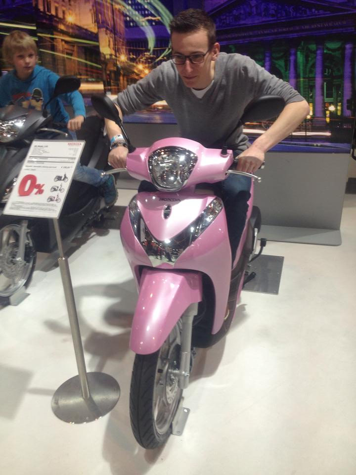

Curriculum Vitea

Contactgegevens:
Bram Van Hemelryck21 jaar
Man
Belg
Tombergstraat 10
Sint-Martens-Lennik
GSM : 0474 08 33 81
E-mail: bram.van.hemelryck@student.ehb.be
Geschiedenis:
2010-2011:Diploma Mechanische Vormgevingstechnieken.
2011-2012:
Diploma Computergestuurde Mechanische Vormgevingstechnieken.
2012-2013:
Gewerkt bij WITRON.
Gewerkt bij HANDIMOVE.
2013-2015:
Gewerkt bij ASCO Industries.
2015-2016:
tot Augustus ASCO Industries.
21 September start opleiding MULTEC.
Erasmus Hogeschool Brussel.